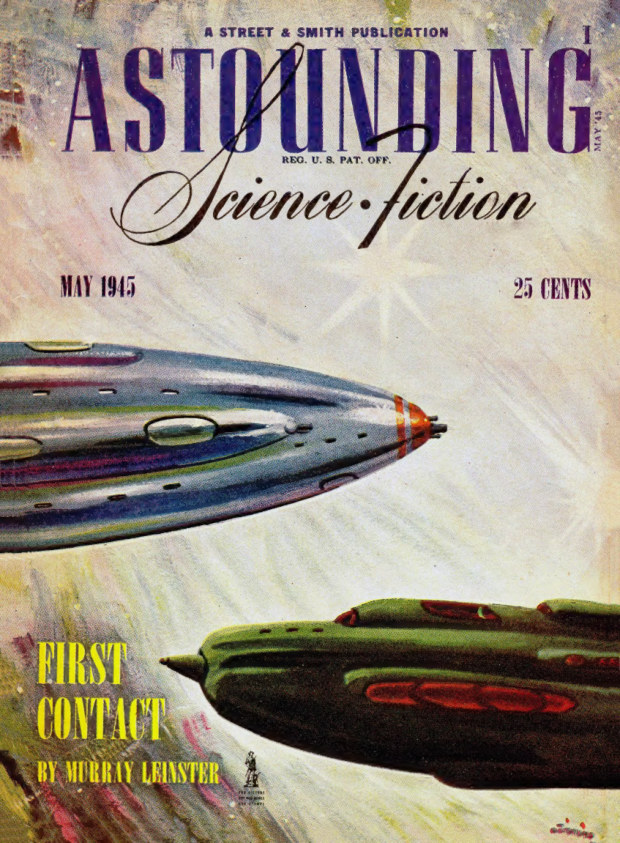
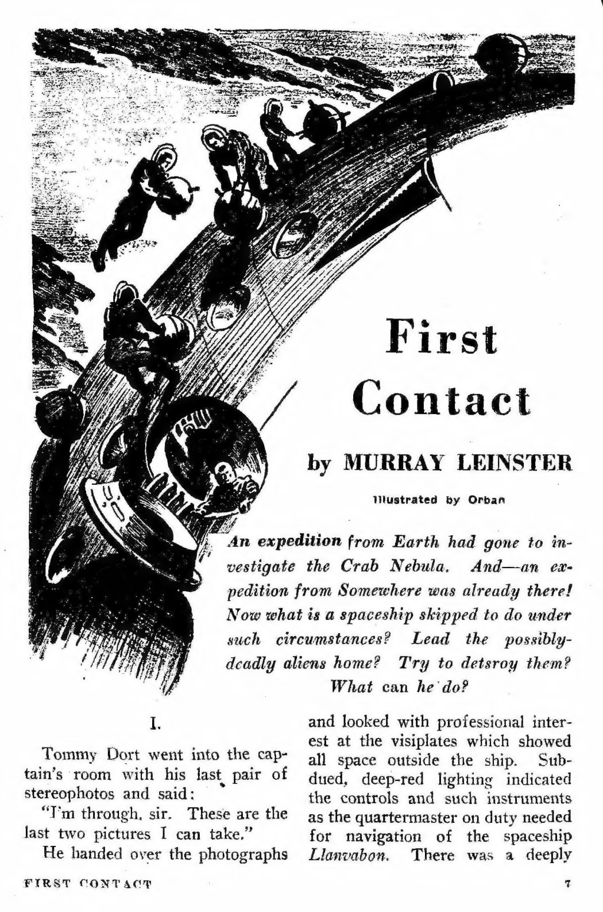

Before: a challenging magazine scan
Pulp magazines combine small print, narrow columns, uneven ink, aged paper, decorative lettering and illustrations that interrupt the text. This issue also has full-page advertisements, optical diagrams and a table of speculative physics. Recovering words is only part of the task: their reading order, captions and article boundaries matter too.


After: the complete reviewed reading copy
The HTML turns the pages into a continuous, selectable text document. A linked contents list leads to the actual story openings, an expandable index reaches every PDF page, and labelled previous-page, contents and next-page links sit beneath each page. Headings, captions, illustration descriptions, tables and a labelled mathematical expression remain available to assistive technology.
The document contains about 77,000 words. Page 180 is the back cover and page 181 is the spine. The original issue’s advertisements and historical wording are retained; the text should be read in its 1945 context.
This copy was made on 10 November 2026 using a controlled test of Chronicle 1.1.9’s online Magazines / Periodicals processing workflow. Gemini 3.8 Flash read the pages, with an additional Gemini 4 Argon reading of the contents. The generated text was then assembled and reviewed. It is a reviewed Chronicle-assisted sample, with editorial changes disclosed below and within the reading copy.
What was checked, and what was corrected
All 181 pages have a completed reading. A separate OCR pass screened every page for possible omissions; flagged pages were compared with the scans. One page was read again because the provider’s first response lacked an explicit completion marker. Rejected, incomplete experiments were excluded from the reading copy.
24 illustration descriptions were revised after checking the pictures, including separate image readings where useful. Some initial descriptions inferred details from the surrounding story: an aircraft illustration was described as a human profile, and a struggle in a Doc Savage advertisement was described as an auction. The reviewed descriptions follow the visible pictures.
Two contents references were corrected against the actual story openings: “The Trap” begins on PDF page 36 and “The One-Eyed Man” on page 48. The unmodified generated readings and the record of changes were retained for comparison. The HTML’s review notes identify the corrections, rather than presenting them as untouched automatic output.
Limits of this example
The entire body text has not been proofread word by word. A completed response and an omission check do not establish perfect transcription. Small print, unusual names, scientific notation and confident-looking words can still be wrong; the original scan remains the authority.
HTML structure, links, page order, keyboard focus and page-index states were checked in a browser. Actual VoiceOver or NVDA speech has not been verified. This example demonstrates the usefulness of an accessible reading copy and source review; it does not establish an accuracy score or guarantee the same result from every scan or installation.